Mon parcours
Je suis en 1ère année de BTS SIO (option SISR) au lycée Saint-Rémi à Amiens. Passionné de réseau et de cybersécurité, ce stage est ma première vraie expérience du monde du travail en informatique.
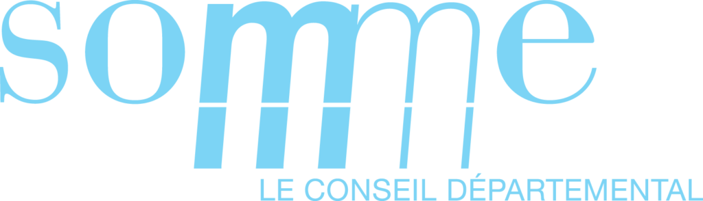
Rapport de stage · BTS SIO · Option SISR · 1ère année
Quatre semaines au cœur de la Direction des Systèmes d'Information.
Je suis en 1ère année de BTS SIO (option SISR) au lycée Saint-Rémi à Amiens. Passionné de réseau et de cybersécurité, ce stage est ma première vraie expérience du monde du travail en informatique.
J'ai choisi le Conseil Départemental de la Somme parce qu'il a un gros parc informatique (VLANs, IP, serveurs). Il gère plein de sites différents, donc on ne fait jamais deux fois la même chose : c'est parfait pour apprendre.
Présentation du Conseil Départemental
Mes missions : support, réseau & téléphonie
Projet technique : configurer des switches Cisco
Bilan : ce que j'ai appris et la suite
Une collectivité qui s'occupe de tout un département, avec une grosse infrastructure informatique pour faire tourner ses services.
Une collectivité de 570 000 habitants qui s'occupe de l'action sociale, des collèges, de l'aménagement du territoire et des routes. Le siège est au 43 rue de la République, à Amiens.
La Direction des Systèmes d'Information gère plus de 2500 postes partout dans le département. Elle s'occupe du matériel Cisco, Fortinet et Alcatel-Lucent, de la sécurité des données et de l'aide aux agents.
J'étais dans l'équipe Support & Réseau : d'abord regarder, puis participer aux configs, aux installations et aux dépannages, au bureau comme sur le terrain.
C'est la salle où les élus de la Somme votent les budgets. Un endroit avec beaucoup d'histoire que la DSI équipe et entretient sans qu'on le voie (caméras, micros, réseau). Ça montre bien pourquoi le réseau doit toujours marcher.
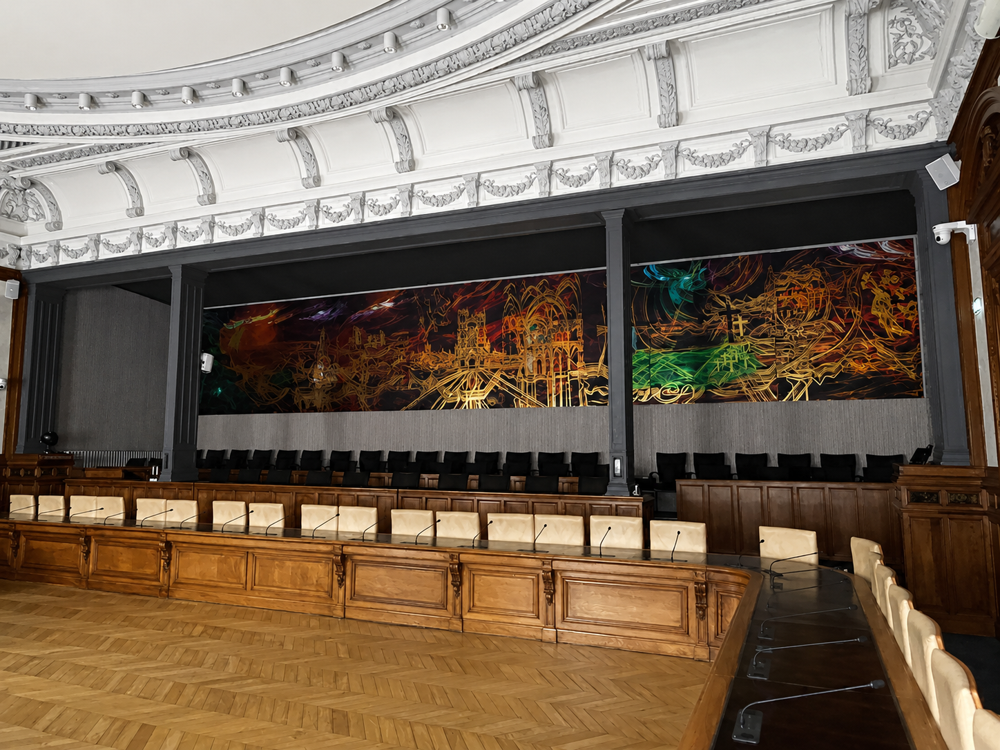
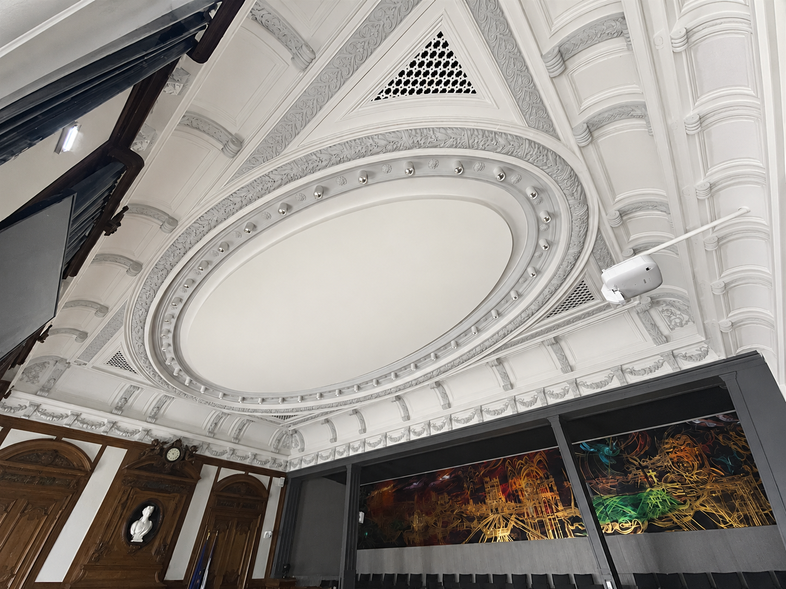
Tous les jours, trois grands domaines : découvrir et entretenir l'infrastructure, gérer la téléphonie sur IP et dépanner les utilisateurs sur place.
Cœur physique du SI : serveurs, équipements réseau et brassage centralisé.
FortiGate pour le pilotage du pare-feu, FortiAnalyzer pour la gestion des logs.
Catalyst 9200, C1000 et stack Alcatel 8770 pour la voix.
Serveur de stockage full flash pour des performances d'accès élevées.
Robot sur bandes magnétiques : archivage longue durée.
Liens haut débit et capteurs, jusqu'aux appareils de mesure des écluses.
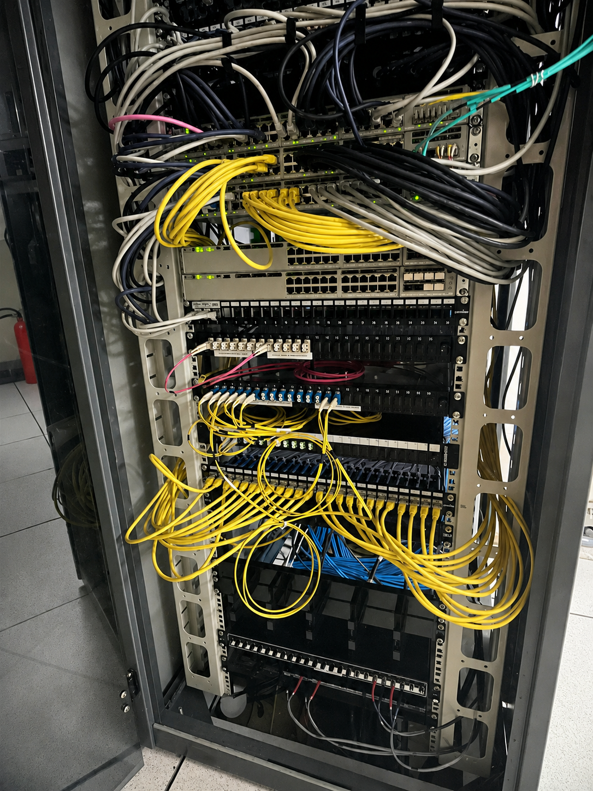
Voici une vraie baie en service, à l'Hôtel des Feuillants (le site des élus) : des dizaines de switches, de patch panels et de câbles cuivre et fibre. J'ai appris à m'y retrouver et à suivre un câble du port jusqu'à la prise murale.
Une partie du stage a servi à remettre de l'ordre : enlever les vieux câbles, ranger proprement et couper les ports qui ne servent pas.
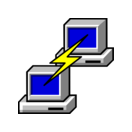
PuTTYPrésentation de l'infrastructure et des logiciels, dont la téléphonie sur Omnivista 8770. Premier déploiement de matériel chez Ameva. Découverte des commandes device-tracking database et show lldp neighbors, puis configuration d'un switch Cisco C9200CX (utilisateurs chiffrés, 4 VLANs, route par défaut, SNMP).
Déploiement de 2 bornes WiFi Cisco 9120AXI via Catalyst Center pour le lycée Saint-Riquier. Réinstallation complète d'un MacBook Pro M3 Max. Passage de la téléphonie en IP fixe chez Ameva, tirage de 4 fibres optiques 10G et diagnostic d'un port de switch grillé.
Activation de ip dhcp snooping et ip arp inspection trust, résolution de problèmes de DAI. Mise à jour de 3 switches C9200 via clé USB, reset propre de switches C1000. Déploiement complet au CDEF Amiens : box Orange Pro, switch, bornes WiFi, passage en IP fixe.
Redémarrage d'une stack de switches tombée en production. Diagnostic réseau à l'Historial de la Grande Guerre de Péronne après une coupure orage (distinction matériel département / prestataire). Configuration de switches C1000 sur mesure et remplacements de téléphonie sur plusieurs sites.
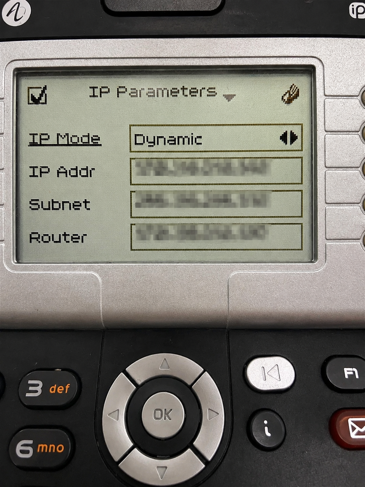
Sur les téléphones Alcatel, j'ai changé le mode IP de Dynamic à Static pour passer le téléphone en IP fixe. J'ai aussi rentré l'adresse, le masque, la passerelle, les DNS, le VLAN et le serveur SFTP. De petites manips à refaire sur plusieurs sites : Ameva, mairies, MDA…
Ça m'a permis de comprendre comment la voix et les données passent sur le même câble grâce au voice VLAN.
Plusieurs bonnes pratiques que j'ai vues pendant mon stage pour mieux protéger le système d'information.
Séparer les niveaux d'administration pour qu'un piratage ne se propage pas partout.
Active Directory, PKI (clés et certificats). Ces comptes servent seulement sur des postes dédiés - jamais pour lire ses mails ou aller sur Internet.
Serveurs de fichiers, bases de données, intranet. Un compte Tier 1 gère ces serveurs mais ne peut pas se connecter à un appareil du Tier 2.
Ordinateurs portables, smartphones, tablettes, imprimantes. Ils n'ont aucun droit sur les serveurs des niveaux au-dessus.
Hucency (avant « Avant de Cliquer ») est une plateforme qui apprend aux utilisateurs à repérer les tentatives de phishing en conditions réelles.
Hucency envoie aux employés de faux mails de phishing qui ressemblent à de vrais mails dangereux, sans les prévenir avant.
Quand un utilisateur clique sur le lien piégé, il est tout de suite prévenu que c'était un test et envoyé vers un contenu pour apprendre.
La plateforme crée des statistiques (taux de clic, utilisateurs à risque, progression dans le temps) pour voir si les campagnes marchent.
Des modules de formation et du e-learning aident les utilisateurs à garder les bons réflexes face aux menaces sur le long terme.
Quatre familles de compétences SISR que j'ai travaillées pendant le stage.
La plus grosse partie du stage : prendre en main des switches Catalyst neufs, les configurer en entier, les sécuriser, les mettre à jour puis les installer sur différents sites.
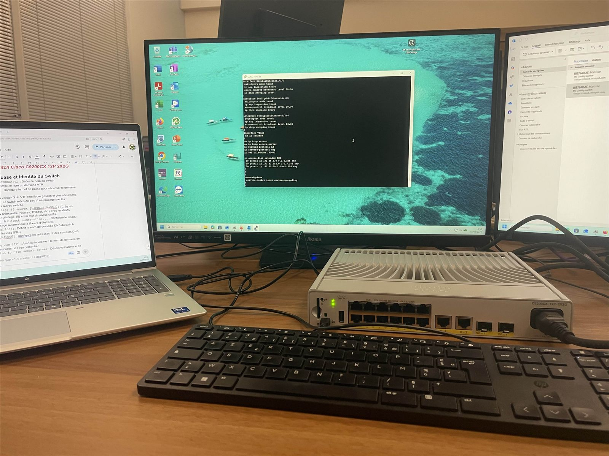
Un PC portable, la fiche de specs, le terminal IOS à l'écran et le switch Cisco C9200CX-12P-2X2G branché en console. À partir de là, j'ai fait toute la config : identité, utilisateurs, VLANs, routage, supervision, sécurité.
C'est là que la théorie réseau du BTS est devenue concrète.
Nom du switch, 5 utilisateurs avec mots de passe chiffrés, secret enable.
5 INFORMATIQUE, 700 VoIP_REP, 910 Actif_WiFi, 1010 Admin_Cisco.
Access + voice VLAN pour la data/voix, trunk vers le cœur, ports inutilisés en shutdown.
Route par défaut 0.0.0.0, chaîne SNMP communautaire pour Centreon.
DHCP Snooping et ARP Inspection trust sur les ports de confiance.
Upgrade IOS via clé USB, vérification d'intégrité puis install … commit.
Découpage logique du switch : chaque usage isolé dans son propre VLAN, avec son sous-réseau et sa passerelle. schéma d'exemple - valeurs anonymisées
| VLAN | Nom | Usage | Sous-réseau (ex.) | Passerelle |
|---|---|---|---|---|
5 | INFORMATIQUE | Postes & données métier | 10.0.5.0/24 | 10.0.5.254 |
700 | VoIP_REP | Téléphonie IP (voice VLAN) | 10.0.7.0/24 | 10.0.7.254 |
910 | Actif_WiFi | Bornes & clients WiFi | 10.0.91.0/24 | 10.0.91.254 |
1010 | Admin_Cisco | Administration des équipements | 10.0.101.0/24 | 10.0.101.254 |
Les ports access portent le VLAN data + le voice VLAN 700 ; les liens vers le cœur de réseau sont en trunk ; l'administration passe par le VLAN 1010, séparé du trafic utilisateur. Plages d'adressage volontairement génériques (données réelles confidentielles - Conseil Départemental).
J'ai vu comment marche un vrai réseau d'entreprise sur plusieurs sites : configurer un switch en console, et surveiller le tout avec Centreon et Catalyst Center.
J'ai appris à chercher une panne dans l'ordre : tester le câble, la prise, l'appareil et le port un par un pour trouver d'où vient le problème. Ça me servira tout le temps.
J'ai travaillé en équipe sur de vraies interventions, en conditions réelles, et il fallait faire attention à ne pas couper le service sur des sites importants du département.
Ce stage m'a conforté dans mon choix de l'option SISR. J'ai découvert comment marche l'informatique dans le public, j'ai mis les mains dans un vrai réseau et j'ai vu comment on applique la sécurité au quotidien. Pour la suite, j'aimerais continuer dans l'administration réseau et la cybersécurité, parce que c'est ce qui me donne envie de faire ce métier.
Monsieur Marc Foratier, pour son accueil à la DSI et sa disponibilité pendant tout le stage.
Monsieur Marc Brasseur, pour m'avoir permis d'intégrer son service et de vivre cette expérience.
Nicolas, Alexandre, Simon, Victor, Clément, Timothée, Romain, Lionel et toute l'équipe pour leurs explications et pour m'avoir fait découvrir leur quotidien sur le terrain.
Pour leur bon accueil, qui a rendu ce stage vraiment enrichissant. Merci pour votre confiance.
Merci
Quelques photos prises sur le vif durant le stage. clique pour agrandir
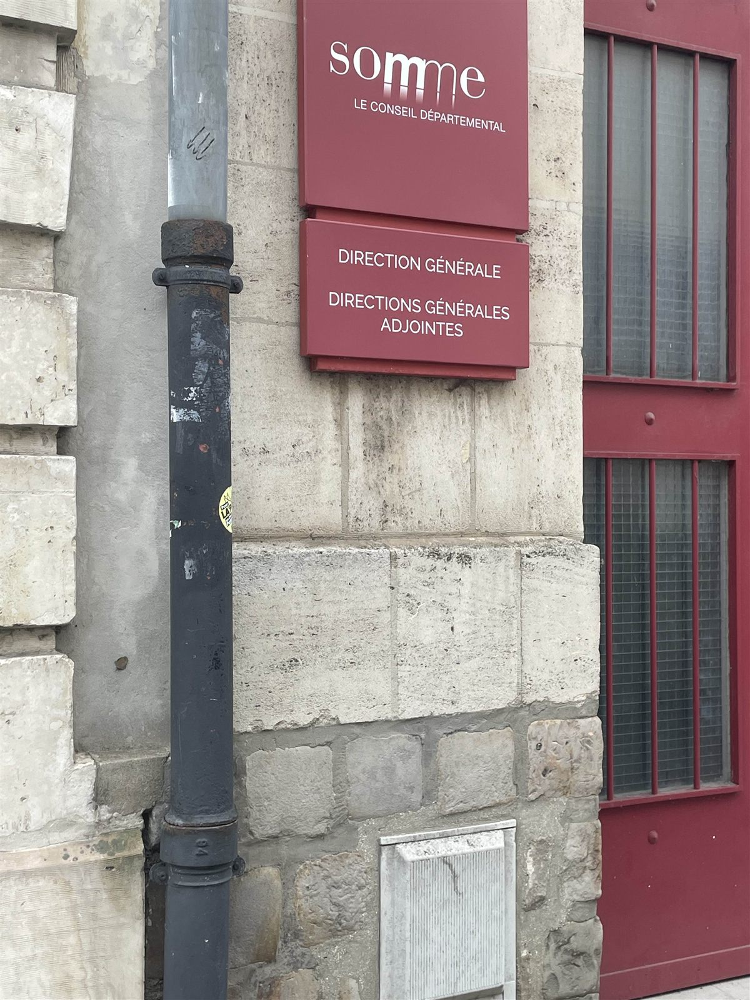
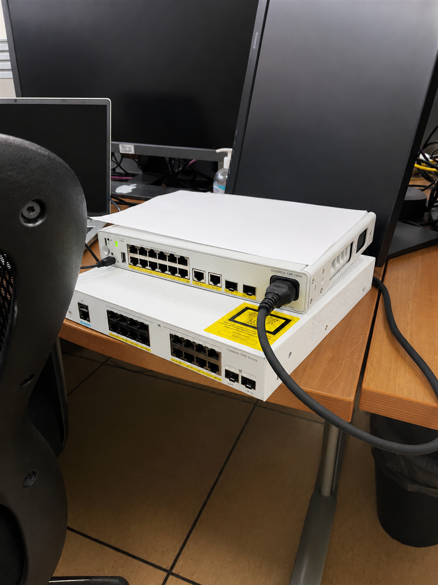
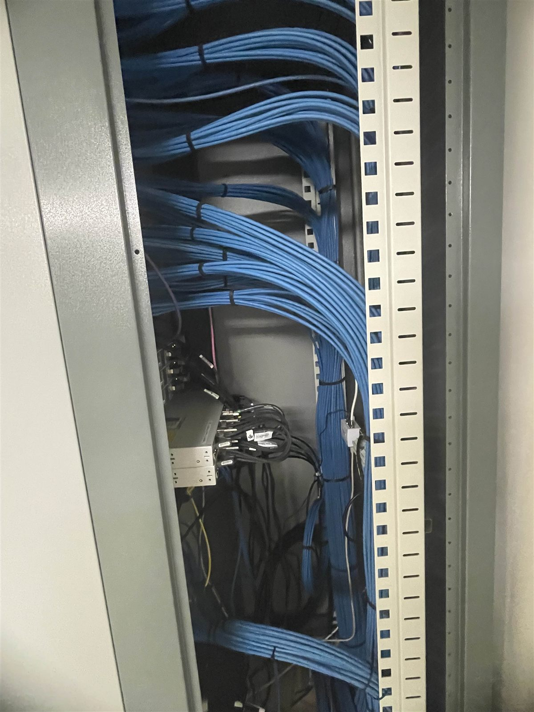
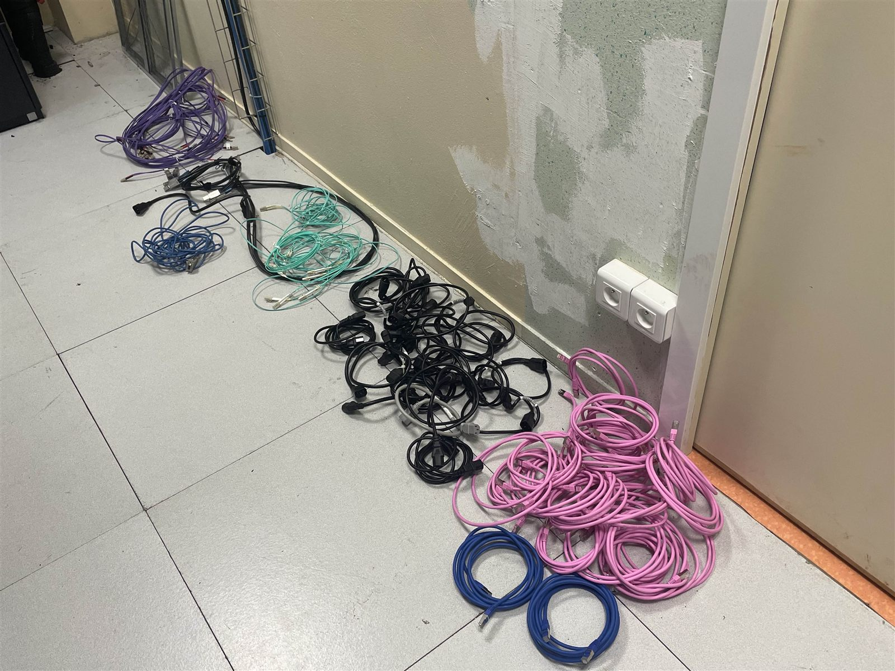
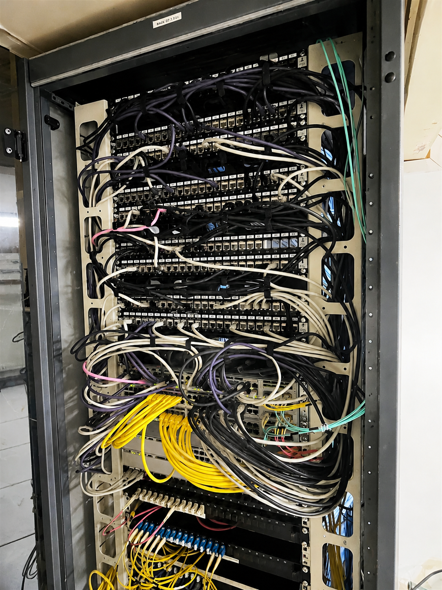
Vous souhaitez découvrir davantage de projets réalisés ? Consultez mon portfolio complet en cliquant sur le bouton ci-dessous.
Cliquez ici pour entrer dans mon portfolio